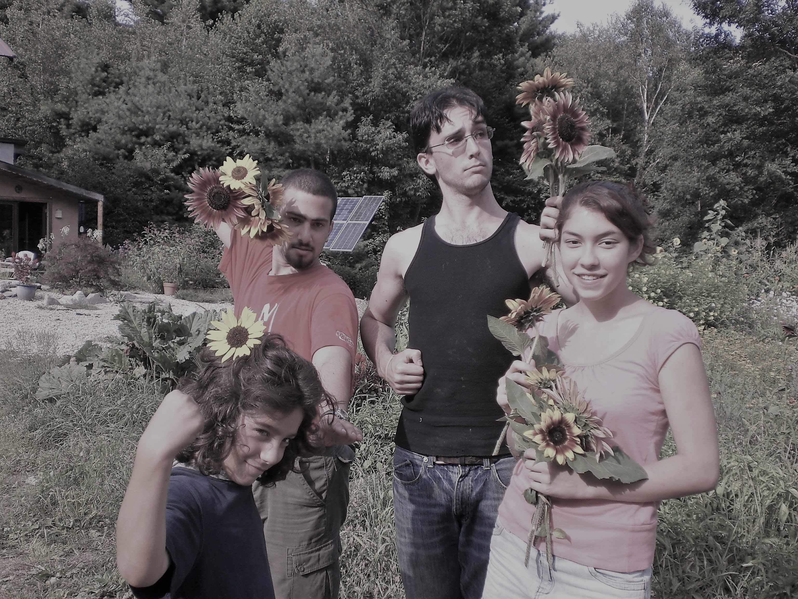

MEDIA
ENJOY OUR PUBLICATIONS:
NEW! Op-Ed on Youth Leadership by Seeds of Solidarity Director Deb Habib
NEW! The Healing Garden Design that we created for Quabbin Retreat; feel free to use it for personal or educational purposes.
NEW! A piece we wrote for the winter 2017/18 edition of Edible Pioneer Valley entitled Signs of Solidarity (lots of other great stories and recipes within too!)
Farming in Solidarity, An interview in the Huffington Post with Seeds of Solidarity founders Deb Habib and Ricky Baruc, Oct 2016
Small Scale No-till Vegetables at Seeds of Solidarity Farm by Brian Caldwell, Cornell Small Farm Quarterly, October 2016
Creating the Worm’s Perfect Single’s Bar by Ricky Baruc in the Natural Farmer, Winter 2015-16
Seeking the Sacred on the Farm– A family art show
If you are looking to write an article about Seeds of Solidarity, read our media backgrounder, then please give us a call to talk more!
Downloadable publications:
Our Community Voices: Food, Health and Resiliency. Enjoy this great publication created through interviews gathered by summer 2013 intern Youn Han.
Video:
Check out our videos on YouTube
